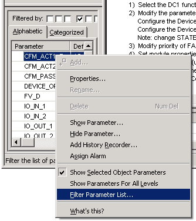
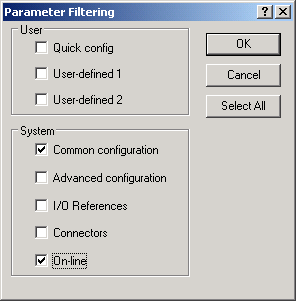
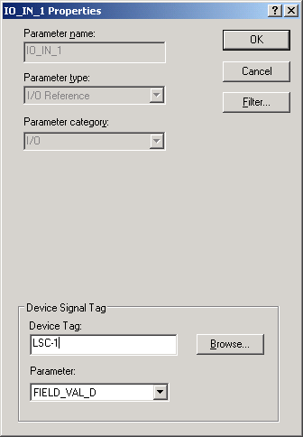
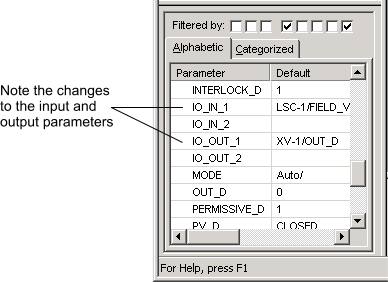

The module template is fairly simple, consisting of only
one function block. To customize the module for the tank application, all you
need to do is identify the Device Signal Tags for the input and output. (Device
Tags are assigned to the I/O channels as part of the I/O card configuration
process.)
-
In the
Diagram view, click the Device Control
function block, DC1.
Four small black squares (called "handles") appear at
the corners to indicate that this block is the currently selected item on the
diagram.
-
Select and right-click a parameter in the
Parameter view, and then select
Filter Parameter List.

The
Parameter Filtering dialog opens.
-
In the
System group, select
Common configuration to display the parameters
most commonly used for configuring process control, and select
On-line to display the parameters most
commonly used for operating a process.

-
Deselect any other boxes that may be checked, and then click
OK to close the dialog.
-
In the
Parameter View, select
IO_IN_1. You may have to scroll down the list
to find it.
-
Double-click
IO_IN_1to open the
Properties dialog.
-
In the
Device Tag field, enter LSC-1. (LSC-1 is the
Device Tag used in our tank example for Limit Switch-Closed.)
The Device Tags for the tank application are listed
in the table in
Control modules used in the tutorials.

The IO_IN_1 parameter is given a value of
FIELD_VAL_D. (You can click the
Parameter field to see this value. It also
appears in the
Parameter view.) LSC-1, together with the
FIELD_VAL_D parameter define the Device Signal Tag (DST).
(If you have configured placeholders for the I/O
cards, you can browse for the Device Tags. Clicking the
Browse button opens a dialog that lists all
the configured I/O card channels and their assigned Device Tags. You can scroll
down the list, select the appropriate Device Tag, and then click
OK. Click the Alphabetic tab to alphabetize
the list and scroll past the entries beginning with COxx to get to the Device
Tag names such as LSC-1.)
-
Click
OK.
-
In the
Parameter View, double-click IO_OUT_1.
The
Properties dialog appears.
-
In the
Device Tag field, enter XV-1, and then click
OK.
XV-1 is the Device Tag used in our example for the
Block Valve. The DST is given a default parameter value of OUT_D.
The
Parameter list should now look like this:
